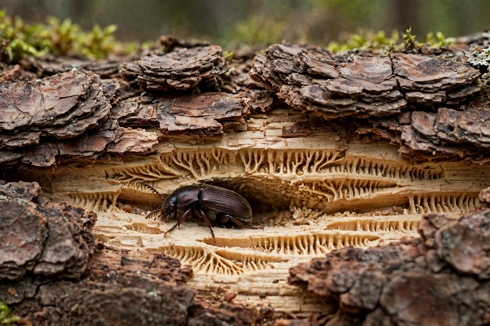

The bark beetles are a subfamily (Scolytinae) of weevils, with around 6,000 species in about 220 genera. They are known for boring into bark and wood, where adults and larvae feed and breed.

Many species attack stressed or dead trees, creating characteristic galleries under bark. Some, such as the mountain pine beetle and spruce beetle, kill healthy trees in outbreaks that have devastated North American and European forests, worsened by climate warming. Some species farm ambrosia fungi as food.
Bark beetles vector plant diseases such as Dutch elm disease. Their outbreaks affect timber, carbon storage and ecosystems.